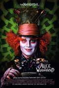

Alice in wonderland
This Disney feature-length cartoon combines the most entertaining elements of Lewis Carroll's Alice in Wonderland and Through the Looking Glass. Chasing after the White Rabbit, who runs into view singing "I'm Late! I'm Late!," Alice falls down the rabbit hole into the topsy-turvy alternate world of Wonderland. She grows and shrinks after following the instructions of a haughty caterpillar, attends a "Very Merry Unbirthday" party in the garden of the Mad Hatter and the March Hare, stands in awe as the Cheshire Cat spouts philosophy, listens in rapt attention as Tweedledum and Tweedledee relate the story of the Walrus and the Carpenter (a sequence usually cut when Alice is shown on TV), and closes out her day with a hectic croquet game at the home of the Red Queen. The music and production design of Alice in Wonderland is marvelous, but the film is too much of a good thing, much too frantic to do full honor to the whimsical Carroll original, and far too episodic to hang together as a unified feature film. One tactical error is having Alice weep at mid-point, declaring her wish to go home: This is Alice in Wonderland, Walt, not Wizard of Oz! Its storytelling shortcomings aside, Alice in Wonderland is superior family entertainment (never mind the efforts in the 1970s to palm off the picture as a psychedelic "head" film).
Find a cinema near you